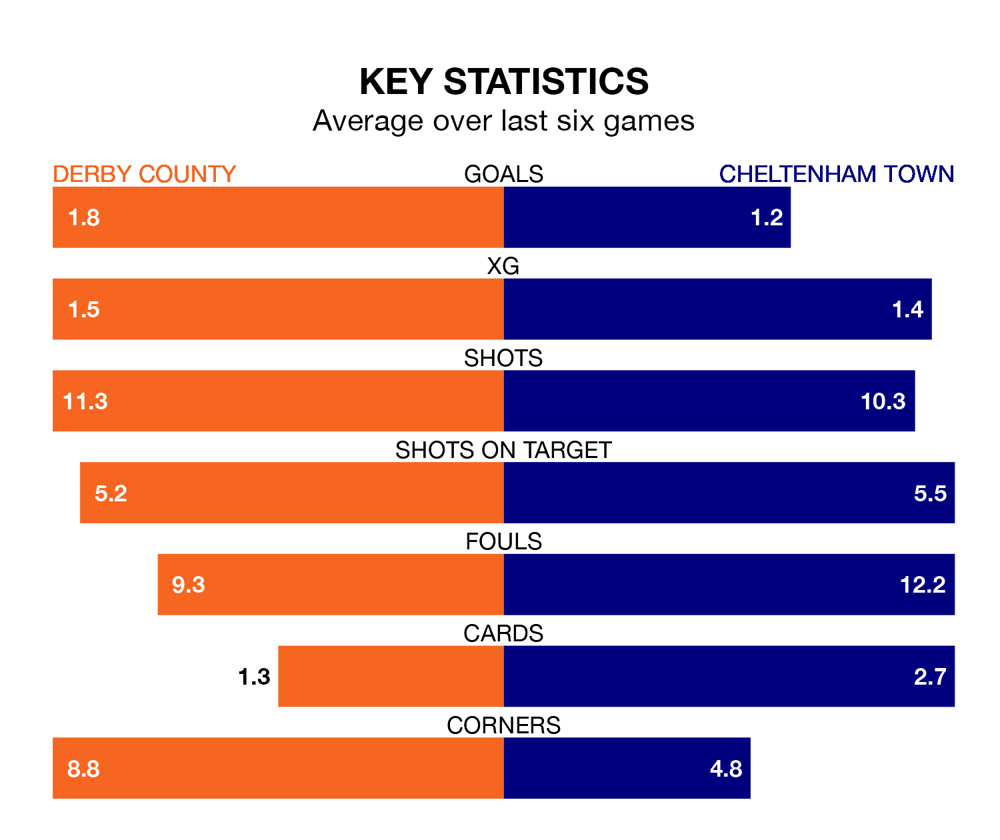

Struggling Derby County face Cheltenham Town at Pride Park Stadium on Saturday looking to build on a win in their last league outing.
After securing all three points with a 0-1 victory over Reading on Tuesday, the Rams sit fourth in EFL League One.
They travel to play a Cheltenham side 22nd in the standings, who lost in their last match, 1-0 against Bolton Wanderers.
With 19 goals in 26 games so far this season, Cheltenham are the league's joint-third-lowest scorers with 0.7 goals per game. And they are conceding at an average rate, letting in 35 goals at a rate of 1.3 per game.
Derby, meanwhile, are above average scorers, with 1.8 goals per game, compared to a league average of 1.3. They have conceded 1.0 goal per game.
County's Nathaniel Mendez-Laing is the league's most creative player, racking up eight assists in 28 appearances so far this season.
For Town, Liam Sercombe, Robert Street and George Lloyd have set up the most goals, having laid on two assists apiece to date.
In the last three years, Derby and Cheltenham have played each other on three occasions. Derby won two of them and they drew once.
Their last meeting was on October 7, when they played out a 1-1 draw.
The Rams are in mixed form in EFL League One, with three wins and a draw from their last six games.
And also with three wins and a draw over that period, the Robins' form is identical – they have both taken 10 points from 18.
Saturday's match will be refereed by Leigh Doughty, who has taken charge of five EFL League One games so far this season, issuing one red card and booking 18 players. He has awarded one penalty.
The last Cheltenham game Doughty refereed was the 3-0 loss at home against Stevenage on September 23. He is yet to oversee a match featuring Derby this season.
Updated: 08:51 (UTC), 25/01/24